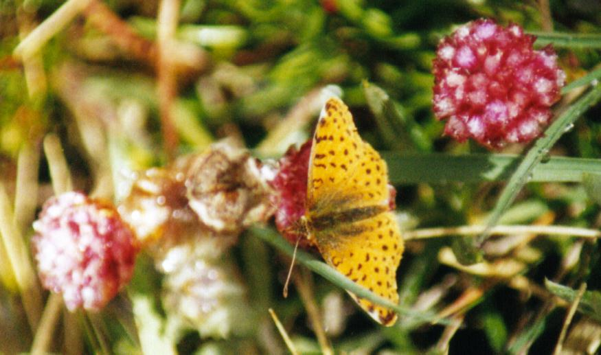

|
Viaje Tierra del Fuego
- Enero 2001
Agradecimientos
El éxito de esta excursión no hubiera sido igual sin la
ayuda de las siguientes personas, a quienes extendemos nuestro más
sincero agradecimiento.
(Listado “en orden de aparición”)
- a Daniel Almirón, Roberto Güller y Patricia Gonzalez, y muchos
otros amigos, quienes me indicaron lugares “fijos” para ver las aves más
difíciles. Dado el poco tiempo del viaje debimos dejar muchos de
estos sitios singulares para un próximo “regreso”
- al geólogo José Luis Panza por facilitarme una monografía
geológica de T. del Fuego
- a Alejandra Fanjul, de la firma que opera el ferry por enviar el calendario
de bajamares.
- a Tito Narosky, por apadrinarme con mis caracoles
- a Rosemary Scoffield, por acompañarnos a ver aves a La Salada, por
la guía de la isla y por una meticulosa revisión del texto
- a los encargados de todos los lugares de pernocte
- al personal de la agencia Renault en Río Grande y Ushuaia por su
profesionalismo y claro objetivo de resolver el problema
- a Juan, Rachel y Mariana Apolinaire, por su hospitalidad, por la cabalgata
y un hermoso mapa de la isla
- a Uwe Müller, cinematógrafo de naturaleza para la TV alemana,
y su colega
- a Tom Goodall, y su esposa Natalie
- a Pedro Russo, estudiante de veterinaria, por todo lo que nos enseñó
- a Paula y Victor, de la empresa de excursiones marítimas Patagonia
Adventure
- a Navarro Vidal, biólogo chileno investigando moluscos marinos
- a Guillermo Harris, presidente de la Fundación Patagonia Natural
- a Gustavo Canals, investigador de mariposas
- a Carlos Rojo, por proporcionarme un artículo de diario
Referencias
A título informativo listo aquí las publicaciones que
sirvieron de base para nuestras observaciones naturalísticas. Casi
todos estos libros formaron parte de nuestro equipaje y fueron de permanente
consulta.
- Patagonia, Las Leyes del Bosque – Santiago G. de la Vera – Ed. Contacto
Silvestre
- Patagonia, Las Leyes de las Costas de Mar – S. G. de la Vera – Ed. Contacto
Silvestre
- Guía para la Identificación de las Aves de Argentina y Uruguay
– T. Narosky, D. Yzurieta – Ed. Vazquez Mazzini
- Birds of Southern South America and Antarctica – M. de la Peña,
M. Rumboll – Ed Collins
- Birds and Mammals of Coastal Patagonia – G. Harris
- Tierra del Fuego – Rae Natalie Prosser de Goodall – Ed. Shanamaiim
- Birds of Tierra del Fuego – Compiled by R. N. P. Goodall (rev. 1998)
- Cien Caracoles Argentinos – Carlos Nuñez Cortés, Tito Narosky
– Ed. Albatros
- Moluscos Magallánicos – Daniel Oscar Forcelli - Ed. Vazquez Mazzini
Sitios de Pernocte: (de norte a sur)
- Descanso Ceferiniano, Pedro Luro. Tel: 02928-420-126
- Hotel Trelew, Trelew. Tel: 02965-437592
- Hotel “Su Estrella”, Comodoro Rivadavia. Ruta 3 - Km 1.850 – Tel:
0297-448-5993 – email: hotelsu@infovia.com.ar
- Camping Isla Pavón, Cte. Luis Piedrabuena. Tel: 02966-155-56191
- Ea. Cabo San Pablo. Contacto: Rachel Apolinare – email: cabosabpablo@infovia.com.ar
- Complejo “Aldea Nevada”, Ushuaia. Contacto: Sr. Reinaldo – email: aldeanevada@tierradelfuego.org.ar
- Hotel “La Rosa”, El Porvenir (T. del fuego chilena)
Otros contactos de interés:
- Transportadora Austral Broom SA (servicio de ferry a la isla, para consultar
fecha y hora de suspensiones de servicio por bajamar). Punta Arens, Chile
- Tel: (061) 212126 – email: tabsa@entelchile.net
- Balsa de El Porvenir. Teléfono para reservar 00 566 158 0089
- CADIC (Centro Austral de Investigaciones Científicas, en Ushuaia)
Tel: 54-02901-422310/433320 - Aqui
al sitio web
- Página web de la Fundación Total sobre el Museo
de la Estancia Harberton. Total Austral es la petrolera que financió
el proyecto
Algunos de los resultados del viaje
DISTANCIAS RECORRIDAS:
Distancia total recorrida: 7.490 km (de los cuales 950 km
fueron de ripio)
Distancia estimada de Bs. Aires hatsa Ushuaia, por Ruta 3 (via Pedro Luro
y Punta Delgada), ida sola, sin desviarse en ruta: 3.287 km
AVES: Vimos unas 167 especies,
de las cuales 22 eran nuevas para nuestra lista. En la isla vimos unas
71 especies (incluyendo las vistas en la zona chilena de la isla y durante
los cruces en ferry). Adjunto la lista de aves observadas. Ver
LISTA
MOLUSCOS: En total recolecté
45 especies distintas de moluscos (compuesto por 25 de Gatropoda y 20 de
Bivalvia). Con estos pude agregar 23 especies nuevas a colección
de caracoles argentinos (13 de Gatropoda y 10 de Bivalvia). Esto lleva
mi colección de moluscos Argentinos a unas 87 especies (48 Gastopoda
más 39 bivalvia) lo cual es aproximado, dada la dificultad que tiene
la ciencia para describir claramente las especies de algunas familias.
Esto se complica aún más cuando los especímenes no
son de optima calidad – lo cual es frecuente en mi caso ya que colecciono
casi exclusivamente valvas de animales muertos encontrados en las playas.
Algunos de estos son caracoles habituales de aguas chilenas, lo cual extiende
la colección a la llamada “Provincia Malacológica Magallánica”).
(Lista en preparación)
MAMIFEROS:
No son muchos: Guanaco, Lobo Marino de un pelo, Tonina Overa, Delfín
Oscuro, Zorros, Zorrinos (por el olor), Hurón (muerto en Prov. Bs.
Aires), Mara.
OTROS:
Una mariposa, Issoria cytheris (un Ninfalido). Visto y fotografiado,
posado en flores de Armeria, a cierta altura (por encima del final de la
aerosilla) hacia el glaciar Le Martial, en Ushuaia. Es una de las pocas
especies de mariposas que llegan a esas latitudes.

 
|